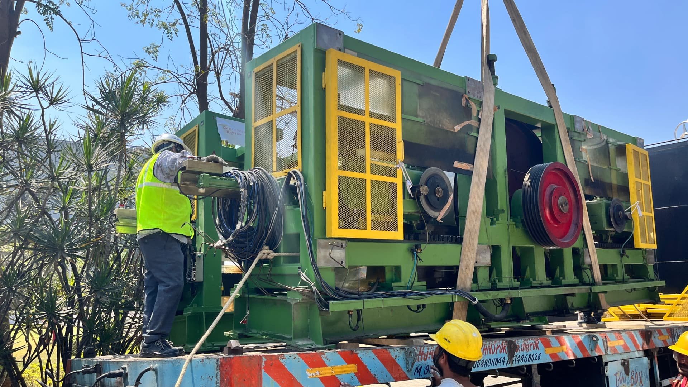

WHAT WE PROVIDE
AGMPL provides technical services to support testing machines throughout their operating life. Our services focus on machine performance, reliability and customer support.

Professional installation and commissioning support to help ensure that testing equipment is correctly set up and ready for operation.

Calibration support helps maintain measurement accuracy and confidence in testing results.

Regular maintenance support helps keep testing machines dependable and ready for continuous use.

Technical repair and service support for testing machines to restore reliable operation.

Support for safely relocating testing equipment when laboratories or production facilities move.

Technical guidance for selecting and configuring testing solutions according to your application.
CUSTOMER SUPPORT
Our support does not stop after machine delivery. AGMPL provides technical assistance to help customers maintain machine performance and achieve dependable testing results.
Request ServiceAssistance from a team familiar with testing machines and industrial applications.
Support for troubleshooting, maintenance and machine-related requirements.
Solutions are considered according to the customer's actual testing requirement.
Contact AGMPL to discuss installation, calibration, maintenance, repair or your specific testing requirement.
Get In Touch